전기산업기사 (2006-05-14 기출문제)
1과목: 전기자기학
1. 전계의 세기가 E인 균일한 전계 내에 있는 전자가 받는 힘은?
- 크기는 e2E이고 전계와 같은 방향
- 크기는 e2E이고 전계와 반대 방향
- 크기는 eE이고 전계와 같은 방향
- 크기는 eE이고 전계와 반대 방향
(정답률: 36%)

2. 유전률 ε0εs의 유전체내에 있는 전하 Q에서 나오는 전속선의 수는?
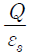
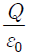
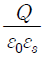
- Q
(정답률: 45%)
3. 전자유도작용과 관계가 없는 것은?
- 가습기
- 지진계
- 유량계
- 송화기
(정답률: 57%)
4. 정전유도에 의해서 고립 도체에 유기되는 전하는?
- 정,부 동량이며 도체는 등전위이다.
- 정,부 동량이며 도체는 등전위가 아니다.
- 정전하뿐이며 도체는 등전위이다.
- 부전하뿐이며 도체는 등전위이다.
(정답률: 42%)
5. 물질의 자화현상을 물성적으로 해석하면?
- 전자의 이동
- 전자의 공전
- 분자의 운동
- 전자의 자전
(정답률: 44%)
6. 자기인덕턴스가 L1,R2이고 상호인덕턴스가 M인 두 회로의 결합계수가 1 일 때, 다음 중 성립되는 식은?
- L1L2=M
- L1L2＜M2
- L1L2＞M2
- L1L2=M2
(정답률: 75%)
7. 두 개의 저항 R1, R2를 직렬로 연결하면 16[Ω], 병렬로 연결하면 3.75[Ω]이 된다. 두 저항값은 각각 몇 [Ω]인가?
- 4와 12
- 5와 11
- 6과 10
- 7과 9
(정답률: 76%)
8. 공간 도체 내에서 자속이 시간적으로 변할 때 성립되는 식은?
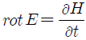
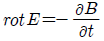
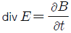
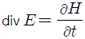
(정답률: 73%)
9. 공간도체 중의 정상 전류밀도를 i, 공간 전하밀도를 ρ라고 할 때 키르히호프의 전류법칙을 나타내는 것은?
- i=0
- div i=0
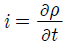
- div i=∞
(정답률: 76%)
10. Q1=Q2=6×10-6[C]인 두 개의 점 전하가 서로 10[cm] 떨어져 있다. 전계의 강도가 0인 점은 어느 곳인가?
- Q1과 Q2의 중간 지점
- Q2에서 Q1쪽으로 15[cm] 지점
- Q2에서 Q1의 반대쪽으로 10[cm] 지점
- Q1에서 Q2의 반대쪽으로 10[cm] 지점
(정답률: 72%)
11. 비유전률이 εs인 매질내의 전자파의 전파속도는?
- εs에 반비례한다.
 에 반비례한다.
에 반비례한다.- εs에 비례한다.
 에 반비례한다.
에 반비례한다.
(정답률: 51%)
12. 그림과 같이 권수 N회, 평균 반지름 r[m]인 환상솔레노이드에 I[A]의 전류가 흐를 때 중심 0 점의 자계의 세기는 몇 [AT/m] 인가? (단, 누설자속은 없다고 함)
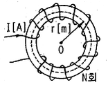
- 0
- NI
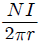
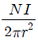
(정답률: 49%)
13. 유전률이 각각 다른 두 유전체의 경계면에 전계가 수직으로 입사하였을 때 옳은 것은?
- 전계는 연속성이다
- 전속밀도가 달라진다.
- 유전률이 같아진다.
- 전력선은 굴절하지 않는다.
(정답률: 60%)
14. 진공 중에 미소 선전류소 Iㆍdℓ[A/m]에 기인된 r[m] 떨어진 점 P에 생기는 자계 dH[A/m]를 나타내는 식은?
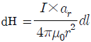
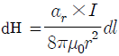
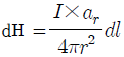
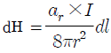
(정답률: 50%)
15. 자기쌍극자에 의한 자계는 쌍극자 중심으로부터의 거리의 몇 제곱에 반비례하는가?
- 1
- 2
- 3
- 4
(정답률: 77%)
16. 한 변의 길이가 a[m]인 정육각형 A,B,C,D,E,F의 각 정점에 각각 Q[C]의 전하를 놓을 때 정육각형의 중심 0에 있어서의 전계는 몇 [V/m] 인가?
- 0
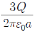
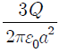
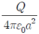
(정답률: 72%)
17. 그림에서 도체 1, 2 … n의 전하 및 전위가 각각 Q1, Q2, … Qn 및 V1, V2 … Vn 일 때 이 계의 정전에너지 W는 어떻게 되는가?
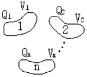
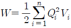
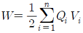
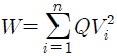
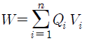
(정답률: 52%)
18. 접지되어 있는 반지름 0.2[m]인 도체구의 중심으로부터 거리가 0.4m떨어진 점 P에 점전하 6×10-3[C]이 있다. 영상전하는 몇C 인가?
- -2×10-3
- -3×10-3
- -4×10-3
- -6×10-3
(정답률: 38%)
19. 원점에 10-8[C]의 전하가 있을 때 점 (1,2,2)[m]에서의 전계의 세기는 몇 [V/m] 인가?
- 0.1
- 1
- 10
- 100
(정답률: 46%)
20. 자화율은 x, 자속밀도를 B, 자계의 세기를 H, 자화의 세기를 J라고 할 때, 다음 중 성립될 수 없는 식은?
- μ=μ0+x
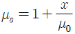
- B=μ0H
- J=xB
(정답률: 64%)
2과목: 전력공학
21. 모선의 보호계전방식에 해당되는 것은?
- 전력평형 보호방식
- 전압차동 보호방식
- 표시선 계전방식
- 위상비교 반송방식
(정답률: 49%)
22. 송전선로에서 역섬락이 생기기 쉬운때는?
- 선로손실이 클 때
- 코로나 현상이 발생할 때
- 선로정수가 균일하지 않을 때
- 철탑의 접지저항이 클 때
(정답률: 71%)
23. 전력계통에서 전력용 콘덴서와 직렬로 연결하는 리액터로 제거되는 고조파는?
- 제5고조파
- 제4고조파
- 제3고조파
- 제2고조파
(정답률: 77%)
24. 복수기에 냉각수를 보내는 펌프는?
- 순환펌프
- 급수펌프
- 배출펌프
- 복수펌프
(정답률: 43%)
25. 송전선의 4 단자정수가 A=D=0.92,B=j80[Ω] 일 때 C의 값은 몇 [℧] 인가?
- j1.92×10-4
- j2.47×10-4
- j1.92×10-3
- j2.47×10-3
(정답률: 48%)
26. 수력발전소에서 조압수조를 설치하는 목적은?
- 부유물의 제거
- 수격작용의 완화
- 유량의 조절
- 토사의 제거
(정답률: 48%)
27. 절연내력을 시험하기 위해 시험용 변압기를 사용하였다. 이 때 전압조정을 하기 위하여 일반적으로 가장 많이 사용되는 것은?
- 한류리액터
- 유도전압조정기
- 소형 발전기의 변속장치
- 다단식 저항 전압조정기
(정답률: 62%)
28. 일반적인 경우 그 값이 1 이상인 것은?
- 수용률
- 전압강하율
- 부하율
- 부등률
(정답률: 75%)
29. 기력발전소에서 탈기기의 설치 목적으로 가장 타당한 것은?
- 급수 중의 용존 산소 및 이산화탄소 분리
- 급수의 습증기 건조
- 물때의 부착 방지
- 염류 및 부유물질 제거
(정답률: 61%)
30. 가공송전선로를 가선할 때에는 하중조건과 온도조건 등을 고려하여 적당한 이도(dip)를 주도록 하여야 한다. 다음 중 이도에 대한 설명으로 옳은 것은?
- 이도가 작으며 전선이 좌우로 크게 흔들려서 다른 상의 전선에 접촉하여 위험하게 된다.
- 전선을 가선할 때 전선을 팽팽하게 가선하는 것을 이도를 크게 준다고 한다.
- 이도를 작게 하면 이에 비례하여 전선의 장력이 증가되며, 심할 때는 전선 상호간이 꼬이게 된다.
- 이도의 대소는 지지물의 높이를 좌우한다.
(정답률: 48%)
31. 재폐로 차단기에 대한 설명으로 옳은 것은?
- 배전선로용은 고장구간을 고속 차단하여 제거한 후 다시 수동조작에 의해 배전이 되도록 설계된 것이다.
- 재폐로계전기와 함께 설치하여 계전기가 고장을 검출하여 이를 차단기에 통보, 차단 하도록된 것이다.
- 3상 재폐로 차단기는 1상의 차단이 가능하고 무전압 시간을 약 20~30초로 정하여 재폐로 하도록 되어있다.
- 송전선로의 고장구간을 고속 차단하고 재송전하는 조작을 자동적으로 시행하는 재폐로 차단 장치를 장비한 자동차단기이다.
(정답률: 66%)
32. 현수애자 4개를 1련으로 한 66[kV] 송전선로가 있다. 현수애자 1개의 절연저항이 1,500[MΩ]이라면 표준경간을 200[m]로 할 때 1[km] 당의 누설컨덕턴스는 몇 [℧]인가?
- 0.83×10-9
- 1.66×10-9
- 0.83×10-6
- 1.66×10-6
(정답률: 35%)
33. 정전용량 C[F]의 콘덴서를 Δ결선해서 3상전압 V[V]를 가했을 때의 충전용량과 같은 전원을 Y결선으로 했을 때의 충전용량의 비(Δ결선/Y결선)는?
- 1/3
- 3
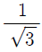
- √3
(정답률: 30%)
34. 중성점 접지방식에서 직접 접지방식을 다른 접지방식과 비교하였을 때 그 설명이 틀린 것은?
- 보호계전기의 동작이 확실하여 신뢰도가 높다.
- 변압기의 저감절연이 가능하다.
- 다중접지사고로의 진전성이 대단히 크다.
- 단선고장시의 이상전압이 최저이다.
(정답률: 45%)
35. 전력선과 통신선과의 상호인덕턴스에 의하여 발생되는 유도장해는?
- 정전유도장해
- 전자유도장해
- 고조파유도장해
- 전력유도장해
(정답률: 57%)
36. 교류 저압 배전방식에서 밸런서를 필요로 하는 방식은?
- 단상 2선식
- 단상 3선식
- 3상 3선식
- 3상 4선식
(정답률: 70%)
37. 송전단 전압 161[kV], 수전단 전압 155[kV], 상차각 60도, 리액턴스가 50[Ω]일 때 선로손실을 무시하면 송전전력은 약 몇 [MW]인가?
- 300
- 321
- 432
- 580
(정답률: 60%)
38. 과전류계전기(OCR)의 탭(tap) 값을 옳게 설명한 것은?
- 계전기의 최소 동작전류
- 계전기의 최대 부하전류
- 계전기의 동작시한
- 변류기의 권수비
(정답률: 58%)
39. 정격전압 1차 6600[V], 2차 220[V]의 단상변압기 2대를 승압기로 [V] 결선하여 6300[V]의 3상전원에 접속하면 승압된 전압은 약 몇 [V] 인가?
- 6,410
- 6,460
- 6,510
- 6,560
(정답률: 40%)
40. 차단기와 차단기의 소호매질이 틀리게 연결된 것은?
- 공기차단기-압축공기
- 가스차단기-SF6가스
- 자기차단기-진공
- 유입차단기-절연유
(정답률: 73%)
3과목: 전기기기
41. 3상 동기 발전기에서 매극 매상의 슬롯 수가 3이면 기본파에 대한 분포권 계수는 어떻게 되는가?
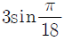
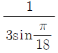
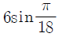
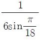
(정답률: 66%)
42. 단자전압 100[V], 전기자 전류 10[A],전기자 회로의 저항 1[Ω], 정격속도 1,800[rpm]으로 전부하에서 운전하고 있는 직류 분권전동기의 토크는 약 몇 [Nㆍm] 인가?
- 2.8
- 3.0
- 4.0
- 4.8
(정답률: 54%)
43. 변압기의 전부하 효율은?
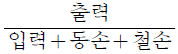
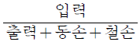
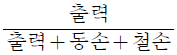
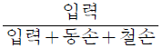
(정답률: 52%)
44. 보호하려는 회로의 전압이 그 예정값 이상으로 되었을 때 동작하는 것으로 기기 설비의 보호에 사용되는 계전기는?
- 거리계전기
- 방향계전기
- 과전압계전기
- 지락 과전압계전기
(정답률: 70%)
45. E 를 교류전압 V의 실효값이라고 할 때 단상 전파 정류에서 얻을 수 있는 직류전압 ed의 평균값은 약 얼마인가?
- 2E
- 1.5E
- 0.9E
- 0.5E
(정답률: 67%)
46. 토크 모터(torque motor)란?
- 특별히 큰 전부하 토크를 발생하는 전동기
- 시동 토크가 특히 큰 전동기
- 정동 토크가 특히 큰 전동기
- 중성 위치에서 어느 각도 만큼 회전하는 전동기
(정답률: 30%)
47. 소형 유도전동기의 슬롯이나 권선의 잘못된 제작으로 전동기를 기동할 때 발생되는 현상은?
- 토크 증가 현상
- 게르게스 현상
- 크로우링 현상
- 제동 토크의 증가 현상
(정답률: 39%)
48. 변압기의 정격전류에 대한 백분율 저항강하가 1.5[%], 백분율 리액턴스 강하는 4[%]이다. 이 변압기에 정격전류를 통하여 전압 변동률이 최대로 되는 부하역률은 약 얼마인가?
- 0.15
- 0.28
- 0.35
- 0.68
(정답률: 43%)
49. 3상 유도전동기의 전원측에서 임의의 2선을 바꾸어 접속하여 운전하면?
- 회전방향이 반대가 된다.
- 회전방향은 불변이나 속도가 약간 떨어진다.
- 즉각 정지된다.
- 바꾸지 않았을 때와 동일하다.
(정답률: 54%)
50. 변압기의 냉각방식 중 유입 자냉식의 표시 기호는?
- ANAN
- ONAN
- ONAF
- OFAF
(정답률: 59%)
51. 25[kW], 125[V], 1,200[rpm]의 직류 타여자 발전기의 전기자 저항(브러시 저항 포함)은 0.4[Ω]이다. 이 발전기를 정격 상태에서 운전하고 있을 때 속도를 200[rpm] 저하시켰다면 발전기의 유기 기전력은 어떻게 변화하겠는가?
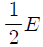
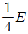
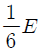
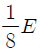
(정답률: 63%)
52. 정격속도로 회전하고 있는 무부하의 분권 발전기가 있다. 계자 권선의 저항이 50[Ω], 계자 전류 2[A], 전기자 저항이 1.5[Ω]일때 유기 기전력은 몇 [V] 인가?
- 97
- 100
- 103
- 106
(정답률: 59%)
53. 직류 전동기의 속도제어 방법에 속하지 않는 것은?
- 저항제어법
- 전압제어법
- 계자제어법
- 2차 여자법
(정답률: 62%)
54. 사이리스터의 게이트 신호 제어는 무엇을 변화 시키는 것인가?
- 전압
- 전류
- 주파수
- 위상각
(정답률: 63%)
55. 동기발전기의 병렬운전에 필요한 조건이 아닌 것은?
- 기전력의 크기가 같을 것
- 위상이 같을 것
- 주파수가 같을 것
- 용량이 같을 것
(정답률: 71%)
56. 다음의 정류회로 중 가장 큰 출력값을 갖는 회로는?
- 단상 반파 정류회로
- 3상 반파 정류회로
- 단상 전파 정류회로
- 3상 전파 정류회로
(정답률: 53%)
57. 동기 발전기의 단자 부근에서 단락이 일어났다고 할 때 단락전류에 대한 설명으로 옳은 것은?
- 서서히 증가한다.
- 처음은 크나 점차로 감소한다.
- 처음부터 일정한 큰 전류가 흐른다.
- 발전기는 즉시 정지한다.
(정답률: 64%)
58. 유도전동기의 동기 와트를 설명한 것은?
- 동기 속도하에서의 2차 입력을 말함
- 동기 속도하에서의 1차 입력을 말함
- 동기 속도하에서의 2차 출력을 말함
- 동기 속도하에서의 2차 동손을 말함
(정답률: 48%)
59. 유도 발전기의 슬립(slip) s의 범위에 속하는 것은?
- 0＜s＜1
- s=0
- s=1
- -1＜s＜0
(정답률: 39%)
60. 변압기의 누설 리액턴스를 줄이는 가장 효과적인 방법은?
- 권선을 분할하여 조립한다.
- 권선을 동심 배치한다.
- 코일의 단면적을 크게 한다.
- 철심의 단면적을 크게 한다.
(정답률: 38%)
4과목: 회로이론
61. 단상 전력계 2개로 평형 3상 부하의 전력을 측정하였더니 각각 300[W]와 600[W]를 나타내었다. 부하역률은 얼마인가? (단, 전압과 전류는 정현파이다.)
- 0.5
- 0.577
- 0.637
- 0.866
(정답률: 58%)
62. 그림과 같은 회로에서 단자 a, b 사이의 전압은 몇 [V]인가?
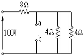
- 20
- 40
- 60
- 80
(정답률: 46%)
63. 대칭 다상 교류에 의한 회전자계 중 설명이 잘못된 것은?
- 대칭 3상 교류에 의한 회전자계는 원형 회전자계이다.
- 대칭 2상 교류에 의한 회전자계는 타원형 회전자계이다.
- 3상 교류에서 어느 두 코일의 전류의 상순을 바꾸면 회전자계의 방향도 바꾸어진다.
- 회전자계의 회전속도는 일정한 각속도이다.
(정답률: 42%)
64. 비정현파 성분을 표시한 것이다. 일번적인 표현으로 가장 바르게 나타낸 것은?
- 직류분+고조파
- 교류분+고조파
- 기본파+고조파+직류분
- 교류분+고조파+기본파
(정답률: 69%)
65. 그림과 같은 회로의 전달함수는? (단, 초기조건은 0 이다.)
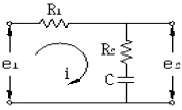
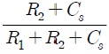
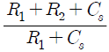
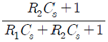
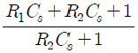
(정답률: 74%)
66. 그림과 같은 4단자망의 영상 전달정수 θ는?
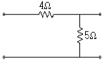
- √5
- log √5
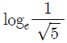
- 5log √5
(정답률: 55%)
67.
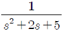
의 라플라스 역변환 값은?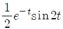
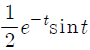
- e-t cos 2t
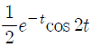
(정답률: 46%)
68. Z=8+j 6Ω인 평형 Y 부하에 선간 전압이 200[V]인 대칭 3상 전압을 가할 때 선전류는 약 몇 [A] 인가?
- 0.08
- 11.5
- 17.8
- 19.5
(정답률: 61%)
69. R[Ω]의 저항 3개를 Y로 접속하고 이것을 200[V]의 평형 3상 교류 전원에 연결할 때 선전류가 20[A] 흘렀다. 이 3개의 저항을 Δ로 접속하고 동일전원에 연결하였을 때의 선전류는 몇 [A] 인가?
- 30
- 40
- 50
- 60
(정답률: 58%)
70. 회로에서 t=0인 순간에 전압 E를 인가한 경우, 인덕턴스 L에 걸리는 전압은?
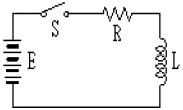
- 0
- E
- E/R
(정답률: 58%)
71. 대칭 3상 전압이 α상 Va[V], b상 Vb=α2Va[V], C상 Vc=αVa[V]일 때 a상을 기준으로 한 대칭분 전압 중 정상분 V1은 어떻게 표시되는가?
- 0
- Va
- αVa
- α2Va
(정답률: 49%)
72. 그림과 같은 회로에서 V1=110[V], V2=120[V], R1=1[Ω], R2=2[Ω]일때 a, b 단자에 5[Ω]의 R3를 접속하였을 때 a, b 간의 전압 [Vab] 는 몇 [V] 인가?
- 85
- 90
- 100
- 1⑤
(정답률: 31%)
73. 어떤 회로의 전압 및 전류가 V=10∠60°, I=5∠30°일 때 이 회로의 임피던스 Z[Ω] 값은?
- √3+j
- √3-j
- 1+j√3
- 1-j√3
(정답률: 49%)
74. 4단자 회로에서 4단자 정수를 A, B,C, D 라 하면 영상임피던스 Z01, Z02는?
(정답률: 61%)
75. 어느 회로에 전압과 전류의 실효값이 각각 50[V], 10[A]이고 역률이 0.8 이다. 무효 전력은 몇 [Var] 인가?
- 300
- 400
- 500
- 600
(정답률: 50%)
76. 그림과 같은 회로는?
- 가산회로
- 승산회로
- 미분회로
- 적분회로
(정답률: 40%)
77. 어떤 부하에 의 기전력을 가하니 전류가 이었다. 이 부하의 소비전력은 몇 [W] 인가?
- 250
- 433
- 500
- 866
(정답률: 41%)
78. 직류 R-C 직렬회로에서 회로의 시정수 값은?
- R/C
- C/R
- RC
(정답률: 43%)
79. 의 라플라스 함수를 시간 함수로 고치면 어떻게 되는가?
- F(t)=e-t-2e-2t
- F(t)=e-t+te-2t
- F(t)=e-t+e-2t
- F(t)=2t+e-t
(정답률: 44%)
80. 그림과 같은 회로가 정 저항 회로가 되기 위한 L 은 몇 H 인가?
- 0.01
- 0.1
- 2
- 10
(정답률: 57%)
5과목: 전기설비기술기준 및 판단 기준
81. 옥내에 시설하는 전동기가 과전류로 소손될 우려가 있을 경우 자동적으로 이를 저지 하거나 경보하는 장치를 하여야한다. 정격출력이 몇 [kW] 이하인 전동기에는 이와 같은 과부하 보호 장치를 시설하지 않아도 되는가?
- 0.2
- 0.75
- 3
- 5
(정답률: 40%)
82. 동일 지지물에 고ㆍ저압을 병가할 때 저압 가공전선은 어느 위치에 시설하여야 하는가?
- 고압 가공전선의 상부에 시설
- 동일 완금에 고압 가공전선과 평행되게 시설
- 고압 가공전선의 하부에 시설
- 고압 가공전선의 측면으로 평행되게 시설
(정답률: 65%)
83. 시가지의 도로상에 시설하는 가공 직류 전차선로에는 특별한 경우가 아닌 경우 그 선로 길이 몇 km 이하마다 계폐기를 시설해야 하는가?
- 1.5
- 2
- 2.5
- 4
(정답률: 49%)
84. 특별고압의 기준으로 옳은 것은?
- 3,000[V]를 넘는 것
- 5,000[V]를 넘는 것
- 7,000[V]를 넘는 것
- 10,000[V]를 넘는 것
(정답률: 63%)
85. 지중 또는 수중에 시설되어 있는 금속체의 부식을 방지하기 위한 전기방식회로(電氣防蝕回路)의 사용전압은 직류 몇 [V] 이하이어야 하는가?
- 30
- 60
- 90
- 120
(정답률: 60%)
86. 가로등, 경기장, 공장, 아파트 단지 등의 일반 조명을 위하여 시설하는 고압방전등은 그 효율이 몇 [lm/W] 이상의 것이어야 하는가?
- 30
- 50
- 70
- 100
(정답률: 62%)
87. 사용전압 22,900[V]의 가공전선이 철도를 횡단하는 겨우 전선의 궤조면상 높이는 몇[m] 이상이어야 하는가?
- 5
- 5.5
- 6
- 6.5
(정답률: 54%)
88. 발전소의 주요 변압기에 반드시 시설하여야 할 계측장치로 옳은 것은?
- 전압 및 전류 또는 전력량
- 전압, 유온(油溫) 및 주파수
- 전압 및 전류 또는 전력
- 전압, 전류 및 수요전력량
(정답률: 50%)
89. 풀용 수중조명등에 전기를 공급하는 절연변압기의 시설에 관한 사항 중 틀린 것은?
- 절연변압기의 2차측 전로는 접지하지 않는다.
- 2차측 전로의 사용전압이 30V 이하인 경우에는 1차와 2차권선사이에 금속제의 혼촉 방지판을 설치한다.
- 1차와 2차 권선사이에 설치하는 금속제의 혼촉 방지판은 제1종 접지공사를 한다.
- 2차측 전로의 전압이 150[V] 이하인 경우에만 혼촉 방지판을 설치한다.
(정답률: 34%)
90. 22.9[kV] 중성선 다중접지 계통에서 각 접지선을 중성선으로부터 분리하였을 경우의 1[km] 마다의 중성선과 대지사이의 합성 전기 저항값은 몇 [Ω] 이하이어야 하는가? (단, 전로에 지기가 생겼을 때에 2초 내에 자동적으로 전로로부터 차단하는 장치가 되어 있다고 한다. )
- 15
- 50
- 100
- 150
(정답률: 36%)
91. 특별고압 가공전선로를 시가지에 시설하는 경우, 지지물로 사용할 수 없는 것은?
- 목주
- 철탑
- 철근 콘크리트주
- 철주
(정답률: 54%)
92. “관등회로”에 대한 설명으로 옳은 것은?
- 분기점으로부터 안정기까지의 전로를 말한다 .
- 스위치로부터 방전등까지의 전로를 말한다.
- 스위치로부터 안정기까지의 전로를 말한다.
- 방전등용 안정기로부터 방전관까지의 전로를 말한다.
(정답률: 65%)
93. 정격전류가 15[A]를 넘고 20[A] 이하인 배선용차단기로 보호되는 저압 옥내전로의 콘센트는 정격전류가 몇 [A] 이하인 것을 사용 하여야 하는가?
- 15
- 20
- 30
- 50
(정답률: 52%)
94. “지지물”의 정의에 대한 설명으로 가장 적당한 것은?
- 지중전선로를 보호하는 설비를 말한다.
- 전주 및 철탑과 이와 유사한 시설물로서 전선류를 지지하는 것을 주목적으로 하는 것을 말한다.
- 목주나 철근으로 전주를 지지 보호하는 것을 주목적으로 하는 설비를 말한다.
- 지중에 시설하는 수관 및 가스관 그리고 매설 지선을 보호하는 것을 주목적으로 하는 것을 말한다.
(정답률: 50%)
95. 3상 220[V] 유도 전동기의 권선과 대지간의 절연내력시험전압과 견디어야 할 최소 시간이 맞는 것은?
- 220[V], 5분
- 275[V], 10분
- 330[V], 20분
- 500[V], 10분
(정답률: 53%)
96. 라이팅 덕트공사에 의한 저압 옥내배선에서 덕트의 지지점간의 거리는 몇 [m] 이하로 하여야 하는가?
- 2
- 3
- 4
- 5
(정답률: 36%)
97. 고압 가공전선로의 전선으로 단면적 14[mm2]의 경동연선을 사용할 때 그 지지물이 B종 철주인 경우라면, 경간은 몇 [m] 이어야 하는가?
- 150
- 200
- 250
- 300
(정답률: 48%)
98. 가공 전선로의 지지물에 시설하는 지선의 시설 기준에 대한 설명 중 맞는 것은?
- 지선의 안전율은 3.0 이상이어야 한다.
- 연선을 사용할 경우에는 소선(素線) 3가닥 이상 이어야 한다.
- 지중의 부분 및 지표상 20cm 까지의 부분에는 내식성이 있는 것 또는 아연도금을 한다.
- 도로를 횡단하여 시설하는 지선의 높이는 지표상 4m 이상으로 하여야 한다.
(정답률: 68%)
99. 지중전선로를 직접 매설식에 의하여 차량 기타 중량물의 압력을 받을 우려가 있는 장소에 시설하는 경우 그 깊이는 몇 [m] 이상이어야 하는가?(관련 규정 개정전 문제로 여기서는 기존 정답인 2번을 누르면 정답 처리됩니다. 자세한 내용은 해설을 참고하세요.)
- 1
- 1.2
- 1.5
- 2
(정답률: 70%)
100. 400[V] 이상의 저압용 기계기구의 철대 및 금속제외함에는 제 몇 종 접지공사를 하여야 하는가?(관련 규정 개정전 문제로 여기서는 기존 정답인 4번을 누르면 정답 처리됩니다. 자세한 내용은 해설을 참고하세요.)
- 제1종
- 제2종
- 제3종
- 특별 제3종
(정답률: 50%)